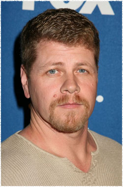

Майкл Кудлиц
 Сержант Абрахам Форд (актёр Майкл Кудлиц) - должен выполнить одну миссию. Всё, что он говорит и делает, ведёт в одном направлении - доставке Юджина в Вашингтон, даже если они заложники в вагоне, ожидающие неминуемой смерти.
Родом из Восточного побережья, Майкл Кудлиц окончил Театральную программу Калифорнийского института искусств и утвердился как универсальный и продуктивный актёр на телевидении и в кино. Хотя его первая любовь - сцена, Кудлиц нашёл ранний успех, работая перед камерой.
Кудлиц известен прежде всего за роль офицера Джона Купера в хорошо принятой критиками драме Саутленд. Он получил похвалу критиков за свою роль в шоу и получил награду 2013 Critics'Choice TV Award за лучшую мужскую роль второго плана в драматическом сериале.
Кудлиц совсем недавно снялся в главной роли в психологическом триллере Путешественник скорби, режиссера Сури Кришнамма с участием Мелани Гриффит.
Кудлиц появился в более чем двадцати фильмах, в том числе: Там, где течет река, Убийство в Гросс-Пойнте, Переговорщик, научно-фантастический триллер Суррогаты с Брюсом Уиллисом, комедия Соперница с Люком Уилсоном. Несколько его заметных работ на телевидении это роли в сериалах Переговорщики, Остаться в живых, Побег, Клиент всегда мертв, Части тела, 24 часа, все три сезона CSI и сериал канала HBO Братья по оружию.
Наиболее известен по фильмам:
Переговорщик
Беги без оглядки
Дракон: История Брюса Ли
Саутленд
Братья по оружию